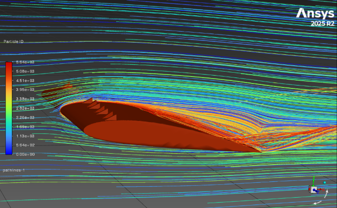
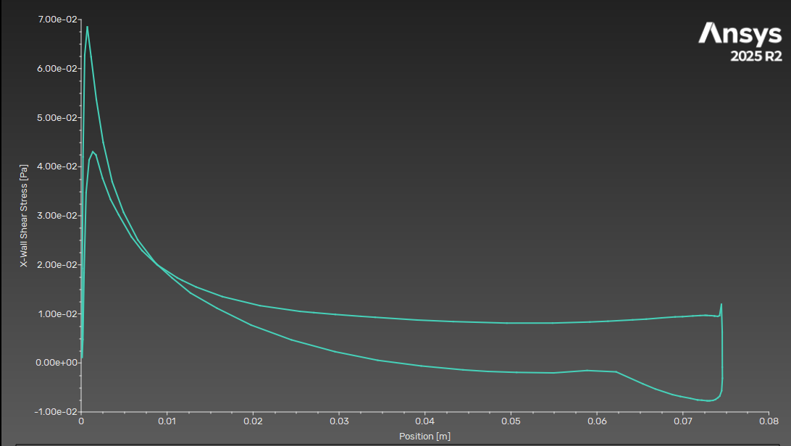
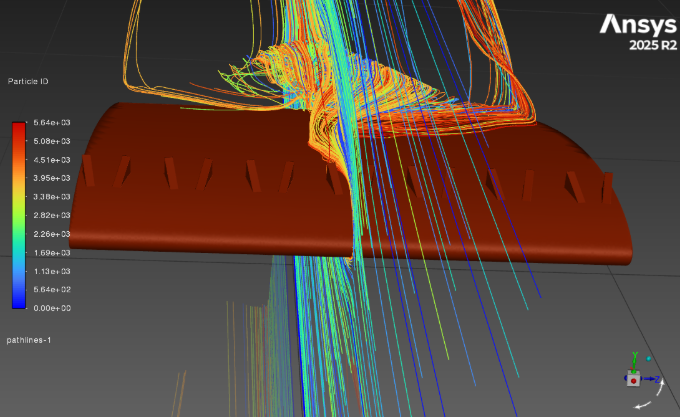

Project at a Glance
The Question
Do the control and vortex-generator configurations show similar separation locations in CFD when evaluated at their experimentally identified separation-criterion angles?
My Contributions
- Rebuilt the geometry in Fusion 360 and reproduced the tunnel-sized fluid domain.
- Developed a steady laminar Fluent workflow with local VG refinement and near-wall layers.
- Compared two meshes and evaluated wall shear, aerodynamic coefficients, and flow visualization.
0.89% change in lift, 1.37% in drag, and a 1.3 mm shift in separation between the two VG meshes.
A two-mesh sensitivity assessment for one configuration. The experimental comparison is preliminary.

01 · Numerical Setup
From Smoke Visualization to CFD
The original experiment used separation reaching 30% chord as a visual criterion. I revisited selected configurations at their corresponding experimental criterion angles. This compares separation behaviour across those operating points; it is not a fixed-angle comparison of lift or drag benefits.
| Parameter | Setting |
|---|---|
| Geometry | NACA 2412; 75 mm chord × 65 mm span. VG elements: 2 mm height × 4.8 mm length × 1 mm thickness. |
| Tunnel Domain | 340 mm streamwise × 120 mm high × 75 mm wide; nominal 5 mm clearance at each wingtip. |
| Operating Point | 0.84 m/s inlet along +X; geometry rotated to the configuration-specific experimental criterion angle. |
| Fluid and Model | Constant-density air: ρ = 1.225 kg/m³, μ = 1.7894 × 10−5 Pa·s; Rec ≈ 4,300. Steady, laminar, pressure-based solver; energy and gravity off. |
| Boundaries | Velocity inlet; pressure outlet at 0 Pa gauge; stationary no-slip walls on the wing, VGs, and tunnel. |
| Numerical Methods | Coupled pressure–velocity scheme; least-squares cell-based gradients; second-order pressure and second-order upwind momentum; global pseudo-time method. |
| Reference Values | Area 0.004875 m²; length 0.075 m; speed 0.84 m/s. Lift along +Y and drag along +X, integrated over the airfoil/VG walls only. |
| Convergence Monitoring | Residual histories, unsmoothed lift/drag reports (Average Over = 1), and inlet–outlet mass balance; target mass imbalance below 0.1%. |
Laminar modelling was selected as the baseline at this low chord Reynolds number. Visible vortices and recirculation do not, by themselves, establish turbulence.
02 · Numerical Verification
A Two-Mesh Sensitivity Check
For the configuration recorded as the “4 mm VG” case, I refined surface and volume sizing while retaining the geometry, angle, boundary conditions, and solver formulation. Boundary-layer count also increased on the fine mesh.
| Mesh Setting | Medium | Fine |
|---|---|---|
| Global Minimum Size | 0.21 mm | 0.146 mm |
| Global Maximum Size | 8.5 mm | 5.95 mm |
| Local Curvature Minimum | 0.21 mm | 0.14 mm |
| Local Curvature Maximum | 5 mm | 3.5 mm |
| VG Face Target Size | 0.20 mm | 0.14 mm |
| Boundary Layers | 22 | 25 |
| Maximum Volume Cell Length | 8.5 mm | 5.95 mm |
Polyhedral volume fill; Smooth Transition inflation on the airfoil/VG wall group, with growth rate 1.2 and transition ratio 0.272. Tunnel walls remained no-slip but had no dedicated inflation layers after corner-quality problems. Their boundary-layer resolution remains a limitation.
| Quantity | Medium | Fine | Refinement Change |
|---|---|---|---|
| Lift Coefficient, CL | 0.4030 | 0.3994 | −0.89% |
| Drag Coefficient, CD | 0.146 | 0.148 | +1.37% |
| Separation Distance | 34.5 mm | 33.2 mm | 1.3 mm upstream |
| Separation, x/c | 46.0% | 44.3% | −1.73 percentage points |
The observed changes indicate limited sensitivity of these quantities between the two tested meshes. They support the preliminary comparison, but do not establish a formal discretization-error bound or mesh independence for every VG configuration.
03 · Findings
Similar Separation Locations, a Shared Offset
| Case | CL | CD | Separation | x/c |
|---|---|---|---|---|
| Control — No VG | 0.390 | 0.125 | 36.9 mm | 49.2% |
| 4 mm VG — Medium | 0.4030 | 0.146 | 34.5 mm | 46.0% |
| 4 mm VG — Fine | 0.3994 | 0.148 | 33.2 mm | 44.3% |
Cases were evaluated at their respective experimental criterion angles. These coefficients therefore should not be interpreted as a fixed-AoA VG performance comparison. Percent chord uses the reported leading-edge separation distances divided by 75 mm.
The control and VG cases place separation in a similar region, approximately 44–49% chord, at operating points where the experiment identified separation at 30% chord. This provides preliminary support for the relative experimental observation, while retaining a downstream offset of roughly 14–19 percentage points.
The common direction of the discrepancy motivates a systematic-error hypothesis, including uncertainty in the original airspeed measurement. It does not identify airspeed as the cause or rule out geometry and angle errors. Inlet-profile assumptions, tunnel-wall resolution, the visual separation criterion, and the steady-flow model can also contribute. Further sensitivity checks are needed to distinguish these explanations.

04 · Flow Visualization

05 · Engineering Decisions
What the Workflow Established
- Separated mesh validity and cell-shape quality from solution sensitivity to refinement.
- Used force histories and mass balance alongside residuals to judge convergence.
- Replaced a visual-only separation estimate with a repeatable wall-shear diagnostic.
- Documented numerical and experimental limitations instead of attributing every discrepancy to the VGs.
Limits and Next Checks
- Resolve tunnel-wall velocity gradients more systematically and test inlet-speed uncertainty.
- Compare the control and VG cases in a larger far-field domain to investigate confinement and boundary-condition sensitivity.
- Investigate the oscillating 11.5° case with transient laminar simulation. That unconverged steady run is excluded from the reported findings.
Method references: NASA grid-convergence guidance · NASA validation assessment. Values and figures on this page come from my Fluent runs.